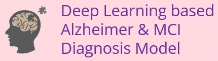
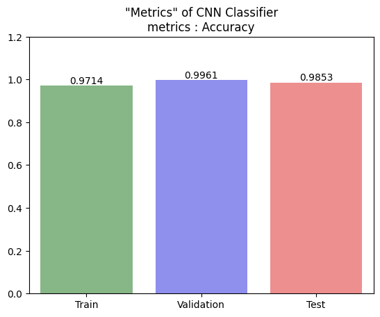
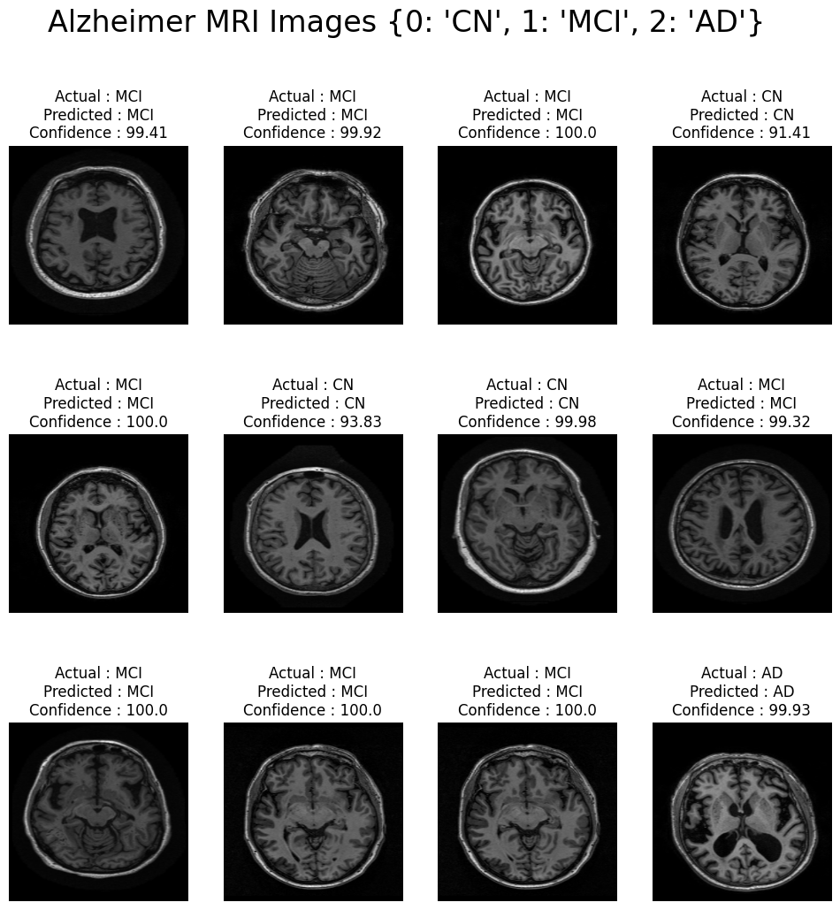

Projects
Kor-DEEPression
2023.01 ~ 2023.02
(개인 프로젝트)
한국형 우울증 딥러닝 예측 진단 프로그램 개발 및 배포
Korean Depression Deep-Learning Model and Diagnosis Program
Web Page
프로젝트 개요
(Outline)
국민건강영양조사 데이터를 통해
우울증 및 주요우울장애(MDD)를
진단하는 딥러닝 모델을 개발하고
프로그램을 웹페이지로 배포하는
풀스택 딥러닝 프로젝트
(Full-Stack DL Project)
기획의도
(Intention)
우울증 고위험군 예측은
우울증 예방에 있어서
매우 중요한 문제입니다.
하지만
대다수의 우울증 환자들은
증세가 심해진 이후에 검사를
실시하는 경우가 많습니다.
따라서
간단한 문진만으로
우울증과 주요우울장애를
진단하는 딥러닝 모델을 구현
하고, 웹페이지로 배포하는
프로젝트를 기획하고
진행하게 되었습니다.
절차 & 기술
(Procedure)
주요 개발 언어 : Python
[ 데이터 수집 & Cloud DB ]
SPSS, Pandas,
PostgreSQL
[ 시각화 분석 & 대시보드 ]
Pandas, Numpy,
Matplotlib, Seaborn,
Plotly,
Google Looker Studio
[ ML / DL 모델링 ]
Scikit-Learn, LightGBM,
Tensorflow, Keras
[ Deployment (배포) ]
Tensorflow-lite,
Bootstrap (HTML5, CSS3)
Flask, Gunicorn, Koyeb
프로젝트 결과물
(Results)
웹페이지 링크
Web Page
프로젝트 소스코드
(Source Code)
Codestates AIB Project (DS-track)
2023.01 (개인 프로젝트)
0과 1을 분류하는 인공신경망 프로그래밍
제한된 라이브러리(numpy,pandas,csv,matplotlib)로 인공신경망을 구현하는 Codestates AIB DataScientist 프로젝트
Github Repo
Alzheimer & MCI
Deep-Learning
Diagnosis Model
2022.12 (개인 프로젝트)

딥러닝 기반 알츠하이머 및 경도인지장애(MCI) 진단 모델 개발
Deep Learning based Alzheimer and MCI Diagnosis Model
프로젝트 개요
(Outline)
합성곱 신경망(CNN)을 통해
ADNI Brain MRI 이미지를
알츠하이머와 경도인지장애로
분류하는 모델을 구현하는
딥러닝 프로젝트
(DL Project)
 Tech Blog
Tech Blog
기획의도
(Intention)
급속한 고령화로 인해
치매 유병률을 계속 상승할
것으로 전망되고 있기 때문에
경도인지장애 진단을 통한
치매 예방은 상당히
중요한 문제입니다.
또한 알츠하이머 진단에서
가장 중요한 뇌촬영 검사는
일반적인 통계적 방법으로는
진단에 어려움이 있습니다.
따라서
합성곱 신경망(CNN)을 통한
알츠하이머와 경도인지장애
예측 진단 모델을 통해서
보다 정확한 치매 진단
치매 예방에 기여하고자
본 프로젝트를 기획하고
진행하게 되었습니다.
절차 & 기술
(Procedure)
주요 개발 언어 : Python
[ 주요 개발 툴 ]
VSCode, Jupyter,
Google Colab
[ Data 처리 & 시각화 ]
Pandas, Numpy,
Matplotlib, Seaborn,
Plotly,
Google Looker Studio,
Scikit-Learn
[ Deep-Learning 모델링 ]
Tensorflow, Keras
ResNet50V2,
Keras-tuner
 Looker Studio
Looker Studio
최종 CNN 모델 학습 결과
최종 CNN 모델 예측 결과
프로젝트 소스코드
(Source Code)
Seoul FP-Weather
2022.11 (개인 프로젝트)
서울시 월별 날씨기반 식중독 환자수 예측 프로그램
Seoul Food-Posisoning Prediction Program by Weather
Web Page
프로젝트 개요
(Outline)
서울시 월간 기상정보를 기반으로
서울시 월간 식중독 환자수를
예측하는 회귀 모델을 개발하고
프로그램을 웹페이지로 배포하는
풀스택 머신러닝 프로젝트
(Full-Stack ML Project)
Tech Blog
기획의도
(Intention)
식중독은 기상 요인과 연관이
깊다고 알려져 있습니다.
따라서
날씨 정보를 통해
식중독 예상 환자 수를
인공지능으로 예측할 수
있지 않을까?라는
질문으로부터 프로젝트를
기획하게 되었고, 웹배포까지
진행하게 되었습니다.
날씨는 지역에 따라
차이가 심하기 때문에
가장 인구가 밀집 되어있는
서울특별시의 기상정보로
API 데이터를 수집하여
프로젝트를 진행하였습니다.
절차 & 기술
(Procedure)
주요 개발 언어 : Python
[ 데이터 수집 & Cloud DB ]
Numpy, Pandas,
requests,
PostgreSQL,
Amazon AWS,
Amazon RDS
[ ML 모델링 ]
Scikit-Learn, LightGBM
[ 시각화 분석 & 대시보드 ]
Matplotlib, Seaborn,
Google Looker Studio,
Tableau public
[ Deployment (배포) ]
Bootstrap (HTML5, CSS3)
Flask, Gunicorn,
Heroku, Koyeb
프로젝트 결과물
(Results)
웹페이지 링크
Web Page
프로젝트 소스코드
(Source Code)
Hypertension Predictive Model
2022.09 (개인 프로젝트)
한국형 고혈압 예측 모델 개발
국민건강영양조사 데이터를 기반으로 고혈압 머신러닝 예측모델을 구현하고 진단기준(유럽vs미국)별로 비교분석하는 프로젝트
Github Repo
Tech Blog
Codestates AIB Project (DS,DA)
2022.08 (개인 프로젝트)
Video Game 기획 프로젝트
"다음 분기에 어떤 게임을 설계해야 할까?"라는 주제로 실시한 Codestates AIB Data Science & Data Analysis 프로젝트
Github Repo
Tech Blog